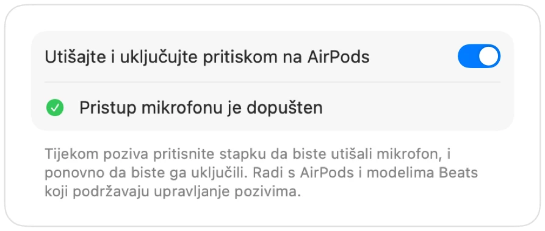

Kako utišati Google Meet uz AirPods na Macu
Na iPhoneu pritisak na stapku slušalica AirPods utišava poziv. Na Macu se Google Meet pokreće u Chromeu, a Chrome taj pritisak ne prenosi web-stranicama. Pritisnete, čujete zvuk pogreške, a Meet nastavlja prenositi vaš glas.
Muffle to rješava za svaki Meet poziv. Sam prima pritisak na AirPods i utišava mikrofon Maca, pa Meet prima samo tišinu čak i kada je kartica u pozadini.
Utišajte Google Meet uz AirPods
- 1
Instalirajte Muffle i dopustite pristup mikrofonu kada se zatraži.
- 2
Pridružite se pozivu za Google Meet u Chromeu, Safariju, pregledniku Arc ili Edge.
- 3
Pritisnite stapku AirPods slušalica jednom za utišavanje. Ikona Muffle postaje crvena.
- 4
Pritisnite ponovno da biste ga uključili. Možete pritisnuti i Control-Option-M iz bilo koje aplikacije.

- Meet može i dalje prikazivati da je mikrofon uključen jer Muffle utišava sam mikrofon, a ne gumb u Meetu. Svi čuju tišinu dok je ikona Muffle crvena.
- Uključite opciju „Započni svaki poziv s utišanim mikrofonom” kako biste ušli u svaki Meet poziv s utišanim mikrofonom.
Pitanja
Zašto pritisak na AirPods ne utišava Google Meet?
Chrome ne podržava gestu utišavanja za AirPods u sustavu macOS za web-pozive, pa macOS nema aplikaciju kojoj bi poslao pritisak. Muffle postaje ta aplikacija.
Nije li dovoljan prečac unutar Meeta?
Prečac Command-D u Meetu radi samo dok je kartica Meeta u prvom planu. Prečac aplikacije Muffle i pritisak na AirPods rade iz bilo koje aplikacije.